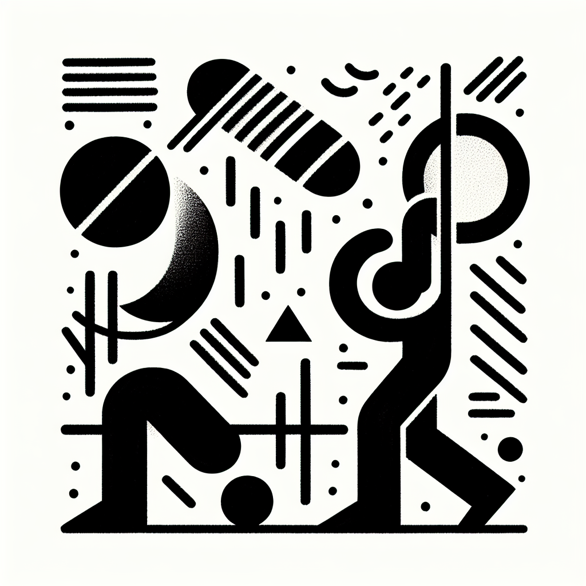

Lagree vs Crossfit : le match de l'intensité
Lagree vs Crossfit : le match de l'intensité
Entretenir sa forme physique n'est pas qu'une question de km parcourus ou de poids soulevés, c'est une quête personnelle d'équilibre et de bien-être. Dans cette aventure, comment choisir le bon allié pour vous accompagner ? Lagree et Crossfit se présentent comme deux approches modernes à haute intensité, mais chacune réserve ses propres surprises. Basée en plein cœur d'Anglet, la communauté DOZ est en parfaite position pour vous aider à naviguer dans ces eaux pleines de challenges et de découvertes.
Lagree : l'élégance de l'efficacité
Le Lagree se distingue par sa capacité à travailler l'ensemble du corps sans impact. C'est une méthode qui, bien qu'intense, protège les articulations grâce à l'utilisation ingénieuse des machines MegaPro. Mais qu'est-ce qui rend vraiment le Lagree si unique ?
- Intégrité musculaire : Chaque séance est conçue pour activer vos muscles profonds, les faisant travailler d'une manière que vous n'aviez peut-être jamais expérimentée auparavant.
- Progression contrôlée : En se concentrant sur la lenteur et la précision, le Lagree vous pousse à atteindre un niveau de maîtrise physique inégalé.
- Sérénité et intensité : L’ambiance dans notre studio Lagree à DOZ reflète la pureté du concept 'Instant Brut' où chaque mouvement compte, sans distraction, avec un design épuré et lumineux en soutien.
Crossfit : le défi du dépassement
Passons de l'élégance contrôlée du Lagree à la dynamique explosive du Crossfit, un autre favori des amateurs de fitness. Le Crossfit est conçu pour ceux qui aiment le mouvement fonctionnel à haute intensité.
- Varité d'exercices : Du poids libre à la gymnastique, en passant par l'endurance cardiovasculaire, chaque séance est variée et conçue pour tester vos limites.
- Sens de la communauté : Entraînez-vous en groupe pour une motivation accrue, où l'esprit d'équipe transforme l'effort solitaire en une celebration collective.
- Résultats visibles : Pour ceux qui cherchent des transformations physiques rapides et visibles, le Crossfit offre une réponse palpable.
Comment choisir ce qui vous convient ?
Le choix entre Lagree et Crossfit repose sur votre vision personnelle du fitness. À DOZ, nous croyons que le bien-être se manifeste aussi bien dans un studio de fitness hyper-spécialisé que dans les petites habitudes quotidiennes comme savourer une tasse de café de spécialité après un entraînement exigeant. Voici quelques éléments à considérer :
- Si la sécurité et la bienveillance envers vos articulations priment pour vous, le Lagree est une voie royale.
- Pour vivre l'expérience vibrante d'une communauté forte et engagée, plongez dans l'univers du Crossfit.
- Votre emploi du temps est chargé ? Lagree propose des sessions de 45 minutes maximisant chaque seconde passée en studio.
- Votre emploi du temps est flexible et vous aimez varier les plaisirs ? Crossfit offre cette multiplicité des expériences à explorer.
Embrasser le style de vie 'Healthy & Surf' avec DOZ
À DOZ, le sport ne vient jamais seul : il invite également à découvrir un ensemble de valeurs et de pratiques intégrées dans un style de vie sain. Imaginez finir une séance de Lagree en dégustant un bol frais, de saison, et une tasse de café de spécialité préparée avec soin dans notre Coffee Shop. C'est cette équation simple mais puissante de bien-être sportif et nutritionnel qui fait toute notre différence.
La rencontre des forces du Lagree, du caractère dynamisant du Crossfit et des moments de quiétude autour d'un bon café, c'est ça le style de vie à l'image de la Côte Basque.
Conclusion : Vivre l'expérience DOZ
Que vous soyez attiré par la précision du Lagree ou le rythme effréné du Crossfit, il est essentiel de se rappeler que ce qui compte avant tout, c'est de trouver une activité qui vous motive et vous correspond. À DOZ, nous vous invitons à explorer ces méthodes, à les vivre et à les savourer.
Venez nous rendre visite à Anglet pour tester une séance de Lagree ou simplement pour découvrir notre Coffee Shop. Ensemble, cultivons votre bien-être au quotidien, un mouvement et une gorgée à la fois. Réservez votre séance maintenant et rejoignez notre communauté passionnée de sport et de saveurs. C'est le moment de passer à l’action !